В этом уроке мы изучим умножение чисел. Напомним, что для умножения маленьких чисел предназначена таблица умножения. Обязательно выучите её наизусть, поскольку любое умножение больших чисел в конечном итоге свóдится к тому, чтобы умножить маленькие.
Содержание урока- Однозначные и многозначные числа
- Умножение однозначных чисел
- Умножение на 10, 100, 1000
- Умножение чисел, которые оканчиваются нулями
- Умножение многозначного числа на однозначное
- Умножение многозначных чисел на многозначные
- Задания для самостоятельного решения
Однозначные и многозначные числа
Для начала введём два новых понятия: однознáчные и многознáчные числа.
Однознáчным называется число, которое состоит из одной цифры. Например, следующие числа являются однознáчными:
0, 1, 2, 3, 4, 5, 6, 7, 8, 9
Слово «однознáчные» говорит само за себя. Однознáчное — значит состоит из одного знака (цифру иногда называют знáком).
Многознáчным называется число, которое состоит из двух и более цифр. Например, следующие цифры являются многознáчными:
10, 11, 15, 255, 350, 1000, 12500
Многознáчных чисел бесконечно много. Их не сосчитать. Кроме того, они подразделяются на следующие виды:
- двузнáчные, которые состоят из двух цифр (например, 25);
- трёхзнáчные, которые состоят из трёх цифр (например, 563);
- четырёхзнáчные, которые состоят из четырёх цифр (например, 1400)
и так далее, в зависимости от того сколько цифр в числе.
Умножение однозначных чисел
Однозначные числа умножаются легко. Достаточно знать таблицу умножения. Примеры:
\[5 \times 5 = 25\]
\[3 \times 5 = 15\]
\[7 \times 6 = 42\]
\[5 \times 8 = 40\]
Если по каким-либо причинам не удаётся вспомнить таблицу умножения, то можно воспользоваться сложением. Ведь умножение это ни что иное как многократное сложение.
Чтобы умножить, например, число 4 на число 3, нужно число 4 сложить три раза:
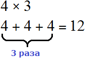
Умножение на 10, 100, 1000
Чтобы умножить любое число на 10, 100 или 1000, достаточно дописáть к множимому количество нулей из множителя.
Например, чтобы умножить 12 на 10, нужно к множимому 12 дописать в конце ноль из множителя 10. В результате получим ответ 120
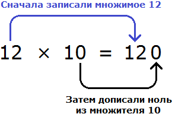
Еще примеры:
12 × 100 = 1200 (к 12 дописали два нуля, поскольку в числе 100 два нуля)
12 × 1000 = 12000 (к 12 дописали три нуля, поскольку в числе 1000 три нуля)
15 × 100 = 1500 (к 15 дописали два нуля, поскольку в числе 100 два нуля)
320 × 100 = 32000 (к 320 дописали два нуля, поскольку в 100 два нуля)
Если нулём оканчивается не множитель, а множимое, то для получения ответа нужно дописать ноль после множителя.
Например, чтобы умножить 10 на 12, нужно в ответе записать множитель 12 и дописать в конце один ноль:
\[10 \times 12 = 120\]
Умножение чисел, которые оканчиваются нулями
Если оба числа оканчиваются нулями, то нужно перемнóжить те цифры, которые нулями не являются, затем к полученному результату дописáть все нули из обоих чисел.
Например, умнóжим 20 на 30.
\[20 \times 30\]
Видим, что оба числá содержат по нулю. Сначала перемнóжим те цифры, которые нулями не являются. Это цифры 2 и 3. Два умножить на три будет шесть:
\[20 \times 30 = 6\]
Теперь к полученному результату, то есть к числу 6 дописываем все нули из обоих чисел. В числе 20 один ноль, в числе 30 также один ноль. Итого два нуля. Дописываем два нуля к числу 6
\[20 \times 30 = 600\]
Пример 2. Умножить 40 на 300
Сначала перемнóжим те цифры, которые нулями не являются. Это цифры 4 и 3. Четыре умножить на три будет двенадцать:
\[40 \times 300 = 12\]
Теперь к полученному результату, то есть к числу 12 дописываем все нули из обоих чисел. В числе 40 один ноль, в числе 300 — два нуля. Итого три нуля. Дописываем три нуля к числу 12
\[40 \times 300 = 12000\]
Пример 3. Умножить 600 на 3000
Сначала перемнóжим те цифры, которые нулями не являются. Это цифры 6 и 3. Шесть умножить на три будет восемнадцать:
\[600 \times 3000 = 18\]
Теперь к полученному результату, то есть к числу 18 дописываем все нули из обоих чисел. В числе 600 два нуля, в числе 3000 — три нуля. Итого пять нулей. Дописываем пять нулей к числу 18
\[600 \times 3000 = 1800000\]
Умножение многозначного числа на однозначное
Чтобы умножить многозначное число на однозначное, надо умножить каждую цифру многозначного числа на это однозначное число. Например, найдем значение выражения 12 × 3. Записываем данное выражение в столбик, при этом единицы должны быть под единицами. Всё это соединяется знаком умножения ( × )
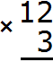
Далее каждая цифра многозначного числа умножается на 3. Умножать начинаем с разряда единиц, то есть с цифры 2. Два умножить на три будет шесть. Записываем цифру 6 в разряде единиц нашего ответа:
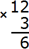
Теперь умножаем 1 на 3, получаем 3. Записываем цифру 3 в разряде десятков нашего ответа:
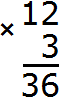
Получили ответ 36.
В данном примере множимым было число 12, а множителем число 3. Число 12 это две единицы и один десяток. Наша задача заключалась в том, чтобы увеличить эти две единицы и один десяток в 3 раза. Тогда решая этот пример, можно было бы рассуждать следующим образом:
Увеличим две единицы в 3 раза: 2 × 3 = 6. Получили шесть единиц. Записываем цифру 6 в разряде единиц нового числа
Увеличим один десяток в 3 раза: 1 × 3 = 3. Получили три десятка. Записываем цифру 3 в разряде десятков нового числа:
Иногда при умножении одной цифры многозначного числа на однозначное число получается многозначное число. В этом случае сначала записывается одна цифра из разряда единиц, а остальные цифры переносятся на следующий разряд, к которому они будут добавлены после вычисления.
Например, найдем значение выражения 23 × 6
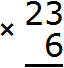
Умножаем каждую цифру числа 23 на 6. Начинаем с тройки: 3 × 6 = 18. Восемнадцать не вмещается в разряд единиц нашего ответа, поэтому сначала записывается 8, а 1 переносится на следующий разряд. Эта единица будет прибавлена к результату умножения 2 на 6
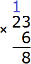
Теперь умножаем 2 на 6, получаем 12, плюс единица, которая досталась от предыдущего умножения. На рисунке эта единица выделена синим цветом. Вычисляем (2 × 6) + 1 = 13
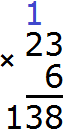
Получили ответ 138. В данном примере множимым было число 23, а множителем число 6. Число 23 это три единицы и два десятка. Наша задача заключалась в том, чтобы увеличить эти три единицы и два десятка в 6 раз. Тогда решая этот пример, можно было бы рассуждать следующим образом:
Увеличим три единицы в 6 раз: 3 × 6 = 18. Получили восемнадцать единиц. Произошло переполнение разряда в разряде единиц. Число 18 это 8 единиц и 1 десяток. 8 единиц записываем в разряде единиц нового числа, а 1 десяток отправляем к разряду десятков. Этот десяток мы прибавим, когда увеличим два десятка в шесть раз:
Увеличим два десятка в 6 раз: 2 × 6 = 12. Получили двенадцать десятков. Плюс прибавляем один десяток, который остался от числа 18.
12 десятков плюс 1 десяток будет 13 десятков. Записываем число 13 в разряде десятков нового числа, образуя окончательный ответ:
Пример 3. Найти значение выражения 326 × 5
Записываем в столбик данное выражение:
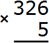
Умножаем каждую цифру числа 326 на 5. Начинаем с шестёрки: 6 × 5 = 30. Число 30 не вмещается в разряд единиц нашего ответа, поэтому сначала записываем 0, а тройку переносим на следующий разряд:
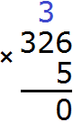
Теперь умножаем 2 на 5, получаем 10 плюс тройка, которая досталась от предыдущей операции: (2 × 5) + 3 = 13. Получили число 13, которое не вмещается в разряд десятков нашего ответа. Поэтому записываем сначала 3, а единицу переносим на следующий разряд:
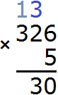
Теперь умножаем последнюю тройку на 5, плюс прибавляем единицу, которая досталась от предыдущей операции: (3 × 5) + 1 = 16. Получили 16. Записываем это число целиком, образуя окончательный ответ:
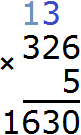
Умножение многозначных чисел на многозначные
Умножение многозначных чисел на многозначные происходит таким же образом, как и умножение многозначных на однозначные. Каждая цифра многозначного числа умножается на каждую цифру другого многозначного числа. Единственное отличие заключается в том, что в конце образуется своего рода лесенка ответов, которые надо сложить. Рассмотрим несколько примеров, чтобы хорошо понять это.
Пример 1. Найти значение выражения 12 × 14
Записываем данное выражение в столбик — единицы под единицами, десятки десятками:
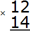
Теперь умножаем каждую цифру числа 12 на каждую цифру числа 14. Делать это надо по-очереди, начав с четвёрки. В результате таких действий мы приходим к умножению многозначного числа на однозначное, которое проходили ранее:
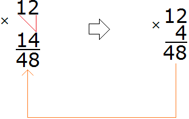
Умножив 12 на 4, мы получили число 48, которое записали таким образом, чтобы разряд единиц этого числа оказался под четверкой, на которую мы умножали число 12.
Теперь умножаем 12 на 1:
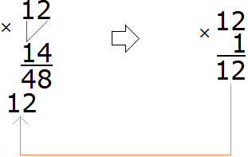
Умножив 12 на 1 мы получили число 12 и записали его таким образом, чтобы разряд единиц этого числа оказался под единицей, на которую мы умножали число 12.
Мы получили лесенку ответов 48 и 12, которую надо сложить. Складываем и получаем ответ 168
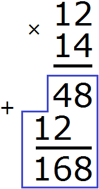
В данном примере множитель 14 это четыре единицы и один десяток. Тогда умножение 12 на 14 можно понимать как увеличение числа 12 в четыре раза и в десять раз. Этим и объясняется появление лесенки в конце решения. Давайте посмотрим как это выглядит на каждом этапе:
Увеличим число 12 в четыре раза, получим число 48
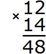
Увеличим число 12 в десять раз, получим число 120. Записываем 120 так, чтобы можно было сложить единицы этого числа с единицами числа 48, а десятки числа 120 можно было сложить с десятками числа 48
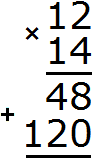
Теперь сложим получившуюся лесенку ответов. Единицы сложим с единицами, десятки с десятками, сотни с сотнями. В результате образуется окончательный ответ:
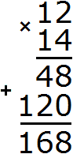
Но чаще всего множитель не группируется с помощью разрядов, и умножение выполняют, умножая каждую цифру множимого на каждую цифру множителя.
Пример 2. Найти значение выражения 25 × 36
Записываем данное выражение в столбик
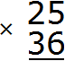
Умножаем каждую цифру числа 25 на каждую цифру числа 36.
Умножим 25 на 6:
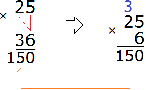
Умножаем 25 на 3:
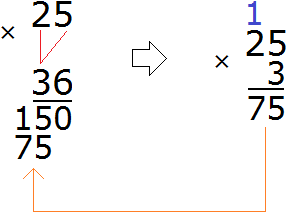
Теперь сложим получившуюся лесенку:
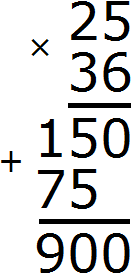
Получили ответ 900.
Рассмотрим большой и сложный пример на умножение: 12305 × 5641. Будем придерживаться ранее изученных правил.
Сначала записываем в столбик данное выражение
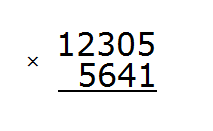

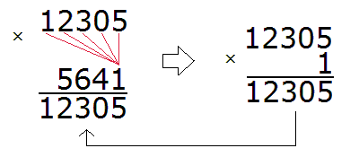
Умножив 12305 на 1, мы получили 12305 и записали это число так, чтобы разряд единиц этого числа оказался под единицей, на которую мы умножили 12305.
Теперь умножаем 12305 на следующую цифру 4:
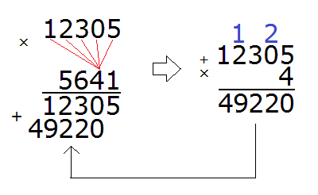
Умножив 12305 на 4, мы получили 49220 и записали это число так, чтобы разряд единиц этого числа оказался под четверкой, на которую умножали 12305.Умножаем 12305 на следующую цифру 6:
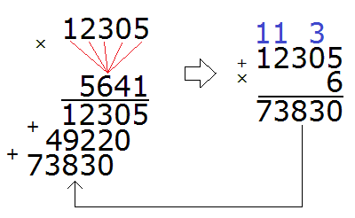
Умножив 12305 на 6, мы получили 73830 и записали это число так, чтобы разряд единиц этого числа оказался под шестёркой, на которую мы умножали 12305.
Теперь умножаем 12305 на последнюю цифру 5:
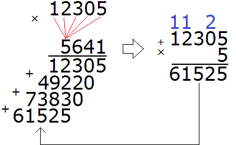
Умножив 12305 на 5, мы получили 61525 и записали это число так, чтобы разряд единиц этого числа оказался под пятёркой, на которую умножали 12305.
В результате мы получили большую лесенку, которую надо сложить. Складываем:
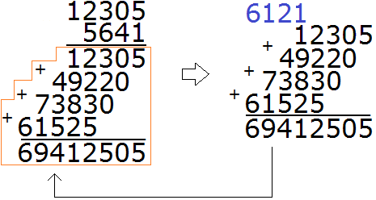
Получили окончательный ответ 69412505.
Если вы поняли этот пример, то можно сказать, что умножение больших чисел вы усвоили на отлично.
На этом урок по умножению можно завершить. Обязательно потренируйтесь, решив несколько примеров, которые даны ниже.
Важно отметить, что все эти стрелки и подробные решения, как на картинках в «боевых условиях» рисовать не принято. Нужно уметь сразу записывать ответы, выполняя в уме все вычисления.
Исключением является то, если человек давно не занимался математикой или никогда ею не занимался. В таком случае можно рисовать для себя стрелки и другие вспомогательные схемы для хорошего усвоения материала.
Задания для самостоятельного решения
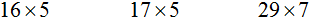
Показать решение
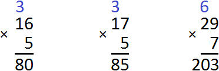
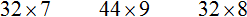
Показать решение
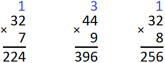
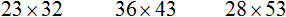
Показать решение
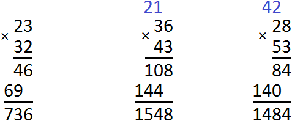
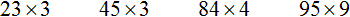
Показать решение
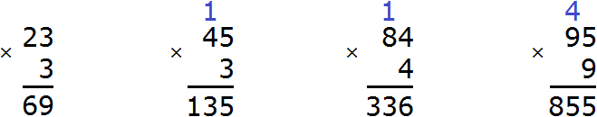